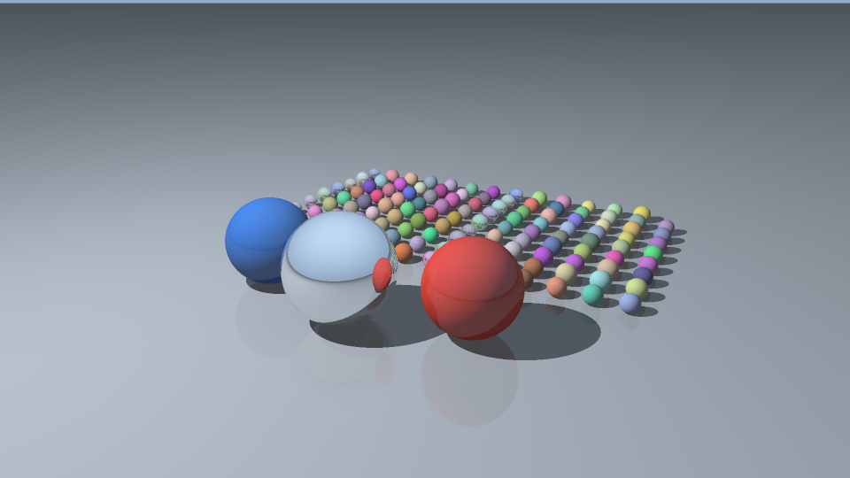

Draft for student review: read, check, and rewrite this description in your own words before submission. Classmates will read it. Miyabi compilation, execution, and performance measurements are not yet verified.
A ray tracer turns a three-dimensional scene into a two-dimensional image by following rays from a camera. This is useful in computer graphics, product visualization, and film rendering. Each pixel asks which surface is visible and how that surface is lit.
This project generates its own scene: colored spheres, a large mirror sphere, an infinite ground plane, a pinhole camera, and one point light. It outputs a binary RGB PPM image. The program supports ambient light, Lambert diffuse light, hard shadows, ideal mirror reflections, and grid supersampling to reduce jagged edges. It is a fully serial C++17 baseline using only the standard library, with no downloaded inputs or dependencies.
For each pixel, the program traces a regular s by
s grid of camera rays, sampling the centers of the grid
cells. Each ray tests every sphere and the plane to find the nearest
positive intersection. Missing rays see a sky gradient. For a surface
hit, ambient light contributes 0.13 times the material color. Diffuse
light contributes
0.87 * max(0, dot(normal, direction_to_light)) times the
color, unless another object blocks the segment from the hit to the
light. The point light has constant strength; distance attenuation is
not modeled.
A reflective surface traces one mirror ray. With reflectivity
r, its color is
(1-r) * local_color + r * reflected_color.
--max-depth d allows at most d mirror bounces
after the camera ray. At depth zero, the terminal color is the full
local lighting, including shadows; no mirror ray is spawned. This cutoff
is a visual approximation. Secondary origins are offset by
1e-5 scene units to avoid self-intersection. Shadow
intersections are bounded by the distance to the light, so objects
behind the light cannot block it.
Samples are averaged in linear color space. Each averaged channel is
clamped to [0,1], converted with gamma 2.0
(sqrt), rounded to an 8-bit value, and stored in a flat RGB
buffer. The buffer is written as PPM P6.
The first three spheres have fixed positions and materials.
Additional spheres occupy a fixed background rectangle. Their radii
shrink as their count grows, keeping the scene within the camera view.
Some can still occlude others, and very small spheres need more pixels
or samples to remain visible. The camera moves back for portrait images.
Scene variation uses std::mt19937 and an explicit mapping
of its integers to real numbers; pixel sampling uses no random state.
The seed affects background spheres, so it has no effect with 1–3
spheres.
All implementation and self-tests are in
raytrace.cpp:
| Data or function | Responsibility |
|---|---|
Vec3, Ray, Material,
Hit |
Vector arithmetic, rays, surface color/reflectivity, and intersection data |
Sphere, Plane, Scene |
A contiguous vector of spheres, a ground plane, and the light position |
Camera, make_camera |
Set position, target, up direction, and field of view; generate pinhole rays |
make_scene |
Generate a deterministic scene outside the render timer |
hit_sphere, hit_plane,
closest_hit |
Solve intersections and select the nearest valid surface |
shadowed, trace |
Check visibility to the light, shade the surface, and recursively reflect |
render, encode |
Sample pixels, average linear colors, check finiteness, and encode RGB bytes |
write_ppm, self_test |
Serialize the image and run lightweight automated checks |
For width W, height H, grid size
s, sphere count N, and maximum depth
d, the worst-case work is
O(W * H * s^2 * (d+1) * (N+1)). Each bounce performs a full
intersection scan and at most one shadow scan. There is only one mirror
child per hit, so ray count is not exponential in depth. Many rays stop
earlier. Memory is O(N + W*H + d), including 3 bytes per
output pixel and the reflection call stack. No acceleration structure is
used.
Use the notebook’s Python (Miyabi G) kernel. The compile cell keeps the course environment line and checks the compiler on Miyabi before compilation. Its availability and version are still pending verification there.
%%bash
set -e
cd code
module purge && module load nvidia/25.9 cuda/12.9 && PATH=/work/gt81/share/env/llvm/bin:$PATH
command -v clang++
clang++ --version
clang++ -O3 -Wall -Wextra -pedantic -std=c++17 raytrace.cpp -o raytraceRun %load_ext miyabi once per kernel in its separate
cell. The run cell uses the existing course job configuration without
adding scheduler options:
%%sub
set -e
cd code
./raytrace --self-test
./raytrace --width 320 --height 180 --samples-per-axis 1 --spheres 16 --max-depth 2 --seed 42 --output quick.ppm
./raytrace --width 960 --height 540 --samples-per-axis 2 --spheres 128 --max-depth 3 --seed 42 --output result.ppmThe second render starts calibration; it is not a promised runtime.
Read its actual timing on Miyabi, then increase resolution, sampling, or
object count gradually if needed. Doubling both dimensions or doubling
s roughly quadruples primary rays; doubling N
roughly doubles intersection work. Aim for seconds to a few minutes,
within the 15-minute job limit. Do not extend runs with empty work or
repeated renders.
Wait for the job to finish successfully before conversion and display:
%%bash
set -e
convert code/result.ppm code/result.pngfrom IPython.display import Image, display
display(Image("code/result.png"))Conversion is postprocessing, not a C++ dependency. If the Miyabi environment check fails, retain the exact error and ask the instructor. The local AI environment cannot submit Miyabi jobs.
| Option | Default | Meaning and accepted values |
|---|---|---|
--width |
320 | Width in pixels, 1–16384 |
--height |
180 | Height in pixels, 1–16384 |
--samples-per-axis |
1 | Grid side s, 1–32; s*s samples per
pixel |
--spheres |
16 | Total spheres including foreground objects, 1–100000 |
--max-depth |
2 | Maximum mirror bounces, 0–32; zero uses local shading only |
--seed |
42 | Scene seed, 0–4294967295 |
--output |
result.ppm |
Nonempty PPM path; parent directory must exist; existing file is overwritten |
--self-test |
off | Run tests and exit without rendering a file |
--help |
off | Print usage and exit |
Total image size is limited to 67,108,864 pixels to bound buffer memory. These limits do not guarantee short runtimes for combined large settings. Malformed arguments, out-of-range values, and output errors print an English error and return nonzero status.
Local validation on 2026-10-29: 29/29 self-tests passed. They cover:
Additional local checks passed for 16 invalid-input/output-failure cases and help text. Successful tiny runs included a 1x1 image with one sphere, depth zero and seed zero, and a portrait image with seed 4294967295. Two separate processes produced identical complete preview PPM files. A depth-zero image differed from the reflected version, as expected.
The preview below was visually inspected. It shows round colored spheres, foreground occlusion, shadows extending away from the light, a sky/ground split and a red neighbor reflected in the large mirror sphere, and faint ground reflections. A 128-sphere small render was also inspected: the background grid stays in view. The depth-zero comparison removes mirror and ground reflections. These checks support the analytic tests but do not prove physical accuracy.

This PNG is a local preview, not a Miyabi result.
Its PPM payload size was checked; PNG conversion passed a lossless pixel
round trip. ImageMagick is absent locally, so temporary Python
standard-library postprocessing converted this preview. The renderer
needs no Python code. The notebook retains the course’s
convert command for Miyabi.
Within the same executable/environment, repeated parameters and seeds should produce identical bytes. The printed FNV-1a pixel checksum helps compare runs; it is not a correctness proof. Future CPU/GPU comparisons should allow floating-point and pixel tolerances, especially at edges and shadow boundaries. Cross-platform byte identity is not assumed.
std::chrono::steady_clock measures two intervals. The
render timer encloses only render: ray generation,
intersections, shading, reflections, averaging, finite-color checks,
gamma conversion, and buffer writes. Scene generation, camera setup,
buffer allocation/initialization, parameter printing, and checksums are
outside it. The write timer includes open, PPM header and byte writes,
and close; it measures writes through the operating system cache, not
guaranteed durable storage. PNG conversion is outside both
intervals.
Every render prints effective parameters, render/write seconds, a
pixel checksum, mean RGB byte value, and nonfinite_pixels=0
on success. Nonfinite color is an error rather than silently encoded as
a pixel.
Actual local environment: aarch64 Linux AI execution host, GCC
g++ (Ubuntu 15.2.0-16ubuntu1) 15.2.0. This compile
completed without warnings:
g++ -O2 -Wall -Wextra -pedantic -std=c++17 code/raytrace.cpp -o /tmp/pd02-raytrace.baGXTq/raytrace
/tmp/pd02-raytrace.baGXTq/raytrace --self-test
/tmp/pd02-raytrace.baGXTq/raytrace --width 320 --height 180 --samples-per-axis 1 --spheres 16 --max-depth 2 --seed 42 --output /tmp/pd02-raytrace.baGXTq/quick.ppm
/tmp/pd02-raytrace.baGXTq/raytrace --width 640 --height 360 --samples-per-axis 2 --spheres 16 --max-depth 2 --seed 42 --output /tmp/pd02-raytrace.baGXTq/preview.ppmThese are short functional checks, not Miyabi benchmarks. All use seed 42; local PPM writes went to temporary storage. Each row is one observed run:
| Environment / image | W x H | s | N | d | Render seconds | PPM write seconds | Pixel checksum (hex) |
|---|---|---|---|---|---|---|---|
| Local quick | 320 x 180 | 1 | 16 | 2 | 0.016788 | 0.000160 | 247645d9d5441b47 |
| Local retained preview | 640 x 360 | 2 | 16 | 2 | 0.258597 | 0.000511 | 56e15c2ce09e645c |
| Local determinism repeat | 640 x 360 | 2 | 16 | 2 | 0.258587 | 0.000417 | 56e15c2ce09e645c |
| Local dense scene | 320 x 180 | 1 | 128 | 2 | 0.082134 | 0.000184 | c30c9979d2cea2f2 |
| Miyabi calibration start | 960 x 540 | 2 | 128 | 3 | Pending | Pending | Pending |
Notebook commands are filled in but have not run in a Miyabi kernel.
Shell file checks were executed locally. No notebook execution output
has been fabricated. After your Miyabi run, record its compiler version,
parameters, render/write times, checksum, and visual observations here.
Update the preview description when the Miyabi output replaces
result.png.
Keep scenes, sampling, depth, compiler options, image quality, and timing boundaries comparable. No speedup is claimed before measurement.
Only spheres and one two-sided ground plane are supported. Lighting is one white point source plus ambient light. Mirrors are ideal; shadows are hard. There is no refraction, texture, soft shadow, indirect illumination, model loader, GUI, multithreading, GPU code, or acceleration structure. Full scans grow linearly with object count. Finite depth, fixed ray offsets, clamping, gamma 2.0 (not the exact sRGB curve), and finite sampling introduce visual/numerical approximations. High sphere counts can require more resolution to resolve.
Before submission, personally compile/run on Miyabi, tune the
workload, inspect the image, fill pending measurements, and
review/rewrite this draft. Keep raytrace.cpp,
problem.md, and the reviewed result.png in
code/. After converting and verifying the final PNG, remove
only generated executables and PPM intermediates
(code/raytrace, code/quick.ppm,
code/result.ppm). Keep the course notebook and required
course files; inspect the whole directory for unrelated files before
submitting manually through Jupyter.